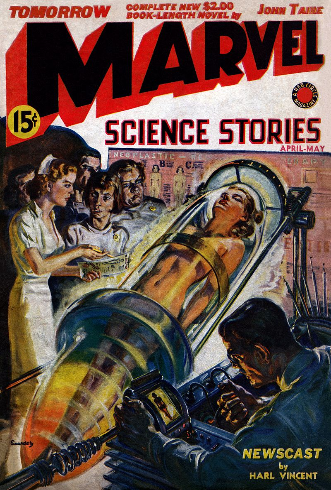
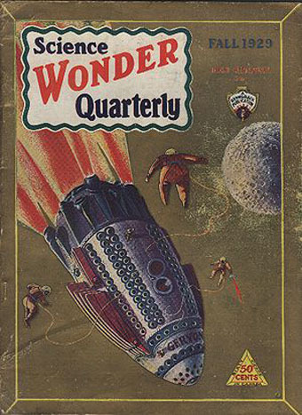

How do we make the future?
 This website explores the question of how futures are made in a world of scientific and technological invention. Historians of science, technology, and medicine – who are constantly wrestling with time, innovation, and change as historical challenges – are uniquely situated to talk about these futures. These essays illustrate the variety of ways by which scientists and authors of speculative fiction alike have sought to define the future.
 Our authors examine tales of harrowing survival, contested accounts of animacy, and voyages through space and time. They discuss the transmission of knowledge and material entities, the enhancement of bodies and minds, and authorial speculations about the future and past. Together, they represent a coordinated effort to understand how scientists and authors of speculative fiction bring the future into being.